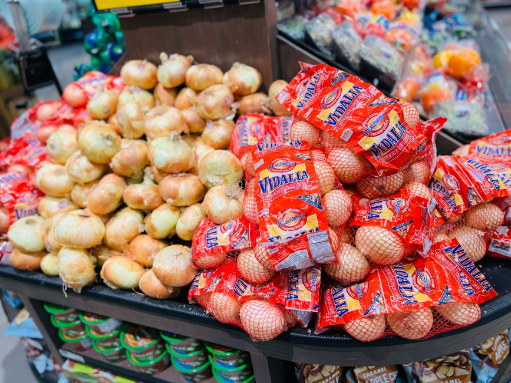
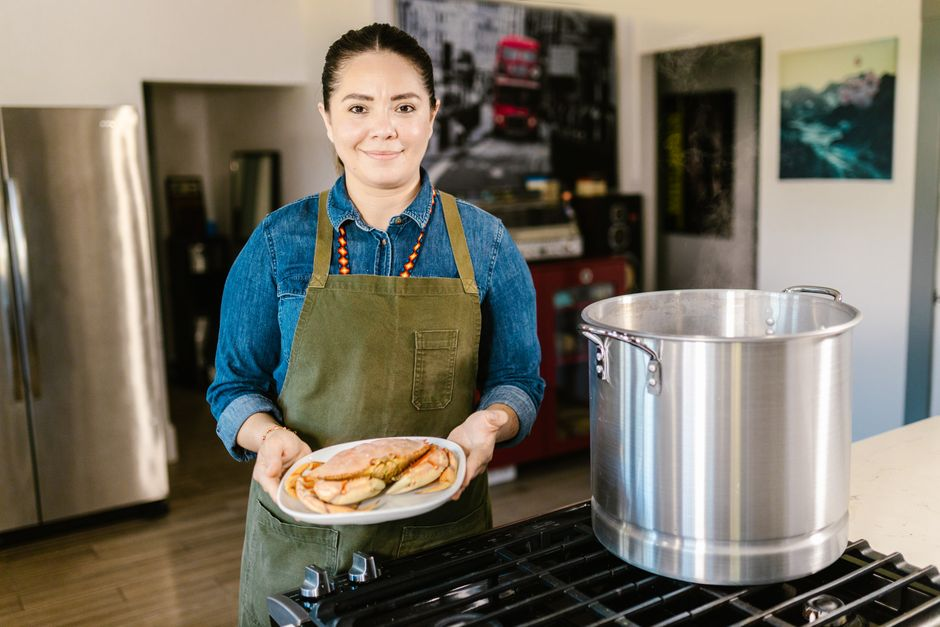

Consejos para cocinar en masa y reducir los costos alimentarios
Photo: Kosoborod / Pixabay
Para estudiantes que buscan manejar sus finanzas universitarias, cocinar en masa puede ser una excelente forma de ahorrar dinero y asegurar comidas nutritivas y económicas. Aquí te presento 5 consejos prácticos y específicos que te ayudarán a lograrlo.
1. Planifica tus comidas de la semana
Planificar tus comidas es crucial para comprar solo lo que necesitas y evitar el desperdicio. Dedica al menos 15 minutos cada domingo para planificar tus comidas. Por ejemplo, puedes preparar ensaladas de lunes a jueves y cocinar estofados los fines de semana. Esto no solo te ahorrará dinero, sino que también te permitirá organizar tu tiempo de manera eficiente.
2. Compra en grandes cantidades

Photo: Yelena HeyTam / Pexels
Cada vez que vayas a la compra, intenta comprar ingredientes en grandes cantidades. Esto puede incluir verduras, frutas, granos o proteínas. Por ejemplo, compra 5 kilos de patatas a un precio menor, que puedes usar para hacer diferentes platos durante la semana. Evita los productos envasados y opta por los productos frescos cuando sea posible.
3. Utiliza las técnicas de cocción en masa

Photo: RDNE Stock project / Pexels
Cocinar en masa puede reducir el tiempo y los costos. Si estás preparando un estofado, puedes cocinarlo en una olla grande y conservarlo en la nevera durante la semana. Esto te permitirá calentarlo rápidamente en un microondas o en el horno, ahorrándote tiempo y energía. Además, puedes hacer una porción de pasta o risotto en una olla grande y guardarla para usarla en ensaladas o platos de ensayo.
4. Compra y prepara con antelación
Comprar ingredientes varios días antes de usarlos puede ayudarte a evitar compras urgentes y reducir el costo. Por ejemplo, compra una cebolla grande y una cucharada de aceite de oliva y prepáralos para hacer ensaladas o salsas durante la semana. Esto no solo te ahorrará dinero, sino que también te permitirá preparar tus comidas de manera más rápida.
5. Recicla tus alimentos
Reciclar alimentos puede evitar el desperdicio y ahorrar dinero. Si tienes una ensalada que no terminaste, puedes usar los ingredientes sobrantes para hacer un smoothie o una ensalada diferente. También puedes cocinar con residuos de verduras, como tallos de apio o tallos de zanahoria, que a menudo se descartan pero que pueden ser útiles para hacer sopas o caldos.
En resumen, cocinar en masa y reducir costos alimentarios no es tan complicado si sigues estos consejos. Con un poco de planificación y organización, puedes hacer comidas nutritivas y económicas que te ayudarán a ahorrar dinero durante tus estudios.